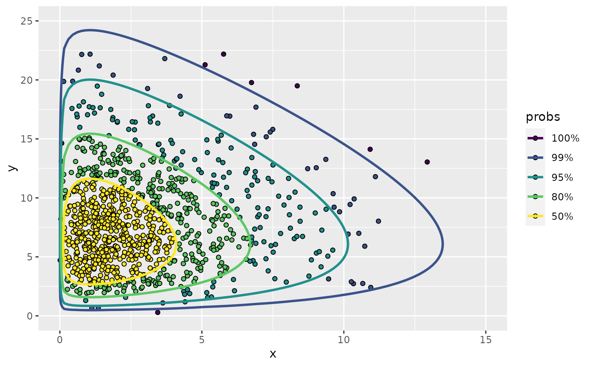

Scatterplot colored by highest density regions of a bivariate pdf
Source:R/hdr_points_fun.R
geom_hdr_points_fun.RdCompute the highest density regions (HDRs) of a bivariate pdf and plot the provided data as a scatterplot with points colored according to their corresponding HDR.
Usage
stat_hdr_points_fun(
mapping = NULL,
data = NULL,
geom = "point",
position = "identity",
...,
fun,
args = list(),
probs = c(0.99, 0.95, 0.8, 0.5),
xlim = NULL,
ylim = NULL,
n = 100,
na.rm = FALSE,
show.legend = NA,
inherit.aes = TRUE
)
geom_hdr_points_fun(
mapping = NULL,
data = NULL,
stat = "hdr_points_fun",
position = "identity",
...,
na.rm = FALSE,
show.legend = NA,
inherit.aes = TRUE
)Arguments
- mapping
Set of aesthetic mappings created by
aes(). If specified andinherit.aes = TRUE(the default), it is combined with the default mapping at the top level of the plot. You must supplymappingif there is no plot mapping.- data
The data to be displayed in this layer. There are three options:
If
NULL, the default, the data is inherited from the plot data as specified in the call toggplot().A
data.frame, or other object, will override the plot data. All objects will be fortified to produce a data frame. Seefortify()for which variables will be created.A
functionwill be called with a single argument, the plot data. The return value must be adata.frame, and will be used as the layer data. Afunctioncan be created from aformula(e.g.~ head(.x, 10)).- geom
The geometric object to use to display the data, either as a
ggprotoGeomsubclass or as a string naming the geom stripped of thegeom_prefix (e.g."point"rather than"geom_point")- position
Position adjustment, either as a string naming the adjustment (e.g.
"jitter"to useposition_jitter), or the result of a call to a position adjustment function. Use the latter if you need to change the settings of the adjustment.- ...
Other arguments passed on to
layer(). These are often aesthetics, used to set an aesthetic to a fixed value, likecolour = "red"orsize = 3. They may also be parameters to the paired geom/stat.- fun
A function, the joint probability density function, must be vectorized in its first two arguments; see examples.
- args
Named list of additional arguments passed on to
fun.- probs
Probabilities to compute highest density regions for.
- xlim, ylim
Range to compute and draw regions. If
NULL, defaults to range of data if present.- n
Number of grid points in each direction.
- na.rm
If
FALSE, the default, missing values are removed with a warning. IfTRUE, missing values are silently removed.- show.legend
logical. Should this layer be included in the legends?
NA, the default, includes if any aesthetics are mapped.FALSEnever includes, andTRUEalways includes. It can also be a named logical vector to finely select the aesthetics to display.- inherit.aes
If
FALSE, overrides the default aesthetics, rather than combining with them. This is most useful for helper functions that define both data and aesthetics and shouldn't inherit behaviour from the default plot specification, e.g.borders().- stat
The statistical transformation to use on the data for this layer, either as a
ggprotoGeomsubclass or as a string naming the stat stripped of thestat_prefix (e.g."count"rather than"stat_count")
Aesthetics
geom_hdr_points_fun understands the following aesthetics (required aesthetics are in bold):
x
y
alpha
color
fill
group
linetype
size
subgroup
Computed variables
- probs
The probability associated with the highest density region, specified by
probs.
Examples
# Can plot points colored according to known pdf:
set.seed(1)
df <- data.frame(x = rexp(1000), y = rexp(1000))
f <- function(x, y) dexp(x) * dexp(y)
ggplot(df, aes(x, y)) +
geom_hdr_points_fun(fun = f, xlim = c(0, 10), ylim = c(0, 10))
# Also allows for hdrs of a custom parametric model
# generate example data
n <- 1000
th_true <- c(3, 8)
rdata <- function(n, th) {
gen_single_obs <- function(th) {
rchisq(2, df = th) # can be anything
}
df <- replicate(n, gen_single_obs(th))
setNames(as.data.frame(t(df)), c("x", "y"))
}
data <- rdata(n, th_true)
# estimate unknown parameters via maximum likelihood
likelihood <- function(th) {
th <- abs(th) # hack to enforce parameter space boundary
log_f <- function(v) {
x <- v[1]; y <- v[2]
dchisq(x, df = th[1], log = TRUE) + dchisq(y, df = th[2], log = TRUE)
}
sum(apply(data, 1, log_f))
}
(th_hat <- optim(c(1, 1), likelihood, control = list(fnscale = -1))$par)
#> [1] 3.059391 8.084245
# plot f for the give model
f <- function(x, y, th) dchisq(x, df = th[1]) * dchisq(y, df = th[2])
ggplot(data, aes(x, y)) +
geom_hdr_points_fun(fun = f, args = list(th = th_hat))
ggplot(data, aes(x, y)) +
geom_hdr_points_fun(aes(fill = after_stat(probs)), shape = 21, color = "black",
fun = f, args = list(th = th_hat), na.rm = TRUE) +
geom_hdr_lines_fun(aes(color = after_stat(probs)), alpha = 1, fun = f, args = list(th = th_hat)) +
lims(x = c(0, 15), y = c(0, 25))
